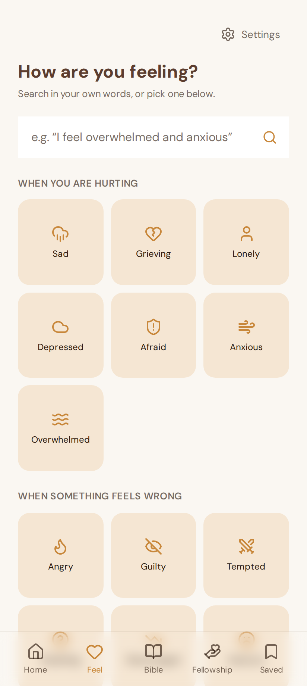
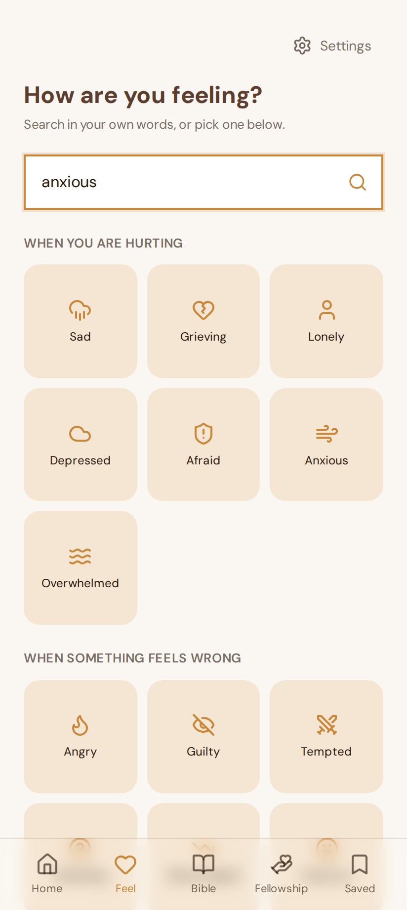
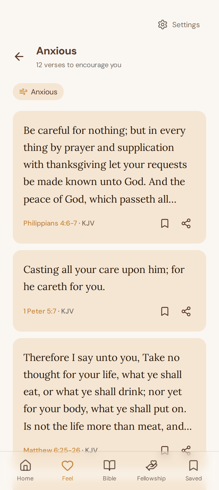
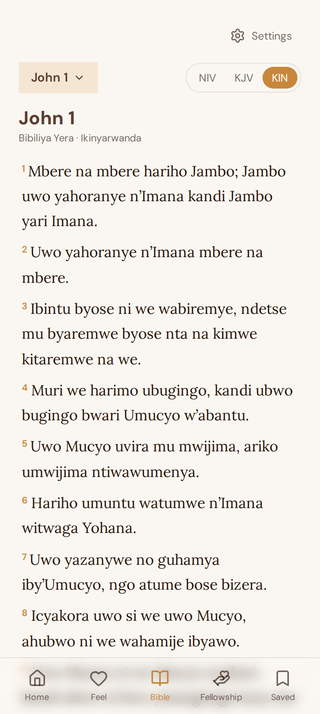

Scripture for your day
Start where you are.

Find Scripture
A word for an anxious moment.


Read in your language
NIV and KJV in English, too.

Wayfind
Read. Share. Grow together.
app.wayfind.workers.dev
Open the app. Find your first verse.
Music: Sascha Ende · ende.app · CC BY 4.0